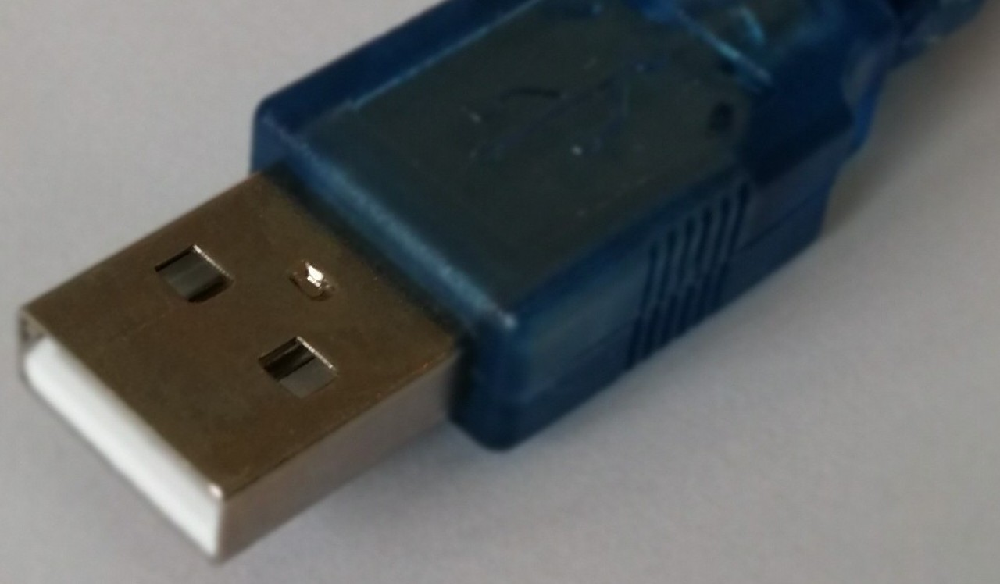

Connecting your Arduino
PC
Connect the USB cable into the USB cable on your PC.

Arduino Board
Connect the square end of the USB into the Arduino Board.
Power
A light should appear on the board.
COM port
What is the COM port?
The COM port is data communication gateway between your PC and the Arduino board. In order to program the board (from your Arduino IDE), you need to connect your Arduino IDE to the correct COM port that your PC is using to communicate with the Arduino board.
The COM port can be any number 1 to 256, however it is usually under 10 - e.g. COM3 or COM4.
Selecting the right COM port
Within the Arduino IDE select Tools -> Port: